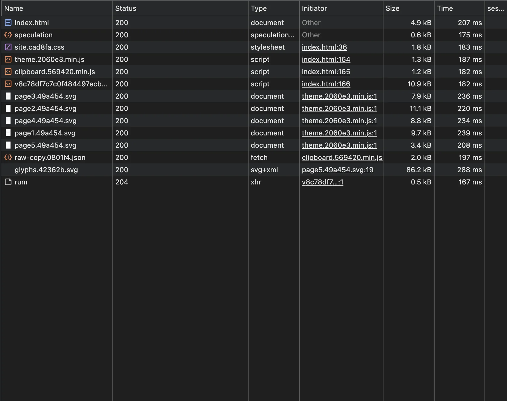
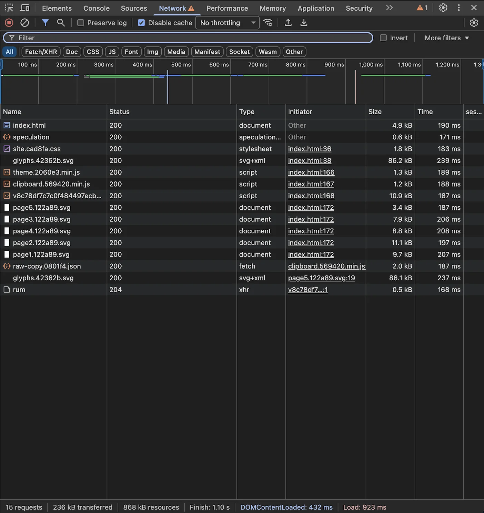
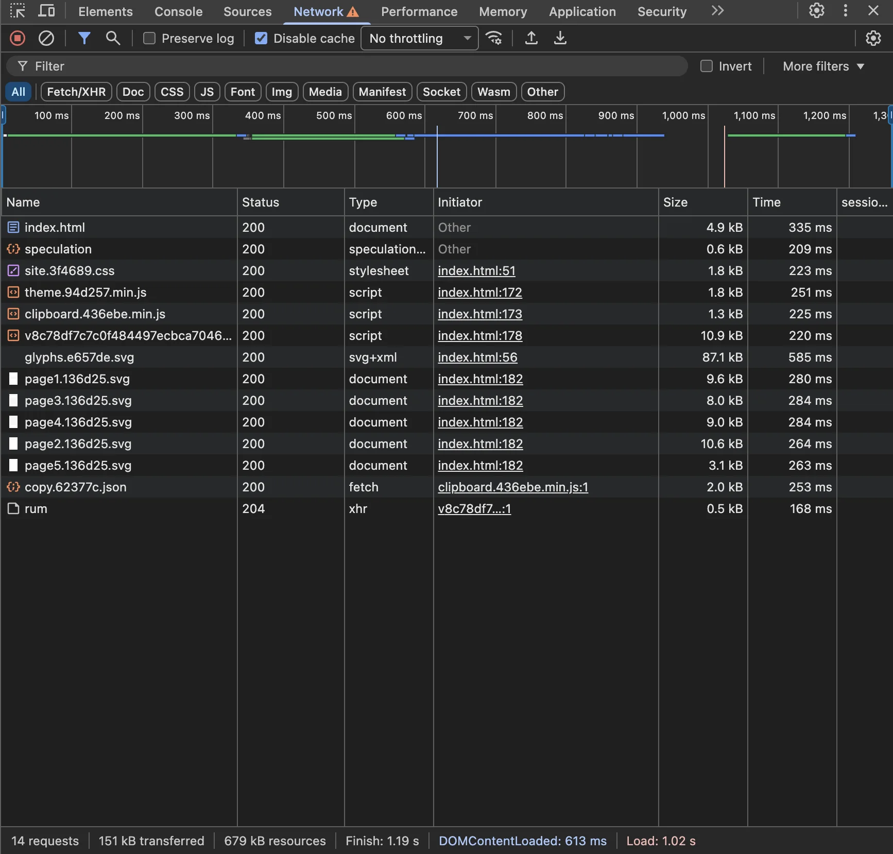

Preload SVG Sprites
You can't preload SVG sprites, but you can.
So I ran into this problem for this specific blog setup: A lot of posts, a lot of SVG pages, the same set of glyphs used across all pages. Keeping a copy of all the glyphs in each page is a waste of bandwidth and hurts loading speed, so I pulled them out into a shared sprite sheet and referenced them like this:
<symbol id="a" ><use href="assets/glyphs.svg#g7q"/>That works as intended, but problem comes: glyphs file is loaded only when the first page that references it is loaded. On a fresh visit, readers would stare at a blank page for some hundreds of milliseconds or longer, which is not great.

<link rel="preload" as="image" href="assets/glyphs.svg"/>…and ended up with the file being downloaded twice.

At that point I figured: If the browser only loads the sprite when it sees a reference to it, why don't I insert a small image to load it before the pages are loaded? So I added this line:
<svg aria-hidden="true" width="0" height="0" style="position:absolute;opacity:0;pointer-events:none"><use href="./assets/glyphs.svg#g1"></use></svg>I should say it does work. Although the glyphs file is still not fully loaded (it is over 80 KiB!) until the pages has been loaded on the first visit, it still cuts the black screen time by three quarters. On subsequent visits to any page, it become instant.

You can visit my blog to see the effect in action: Blog
And that is the end of the story.
Edited on 2026-04-16